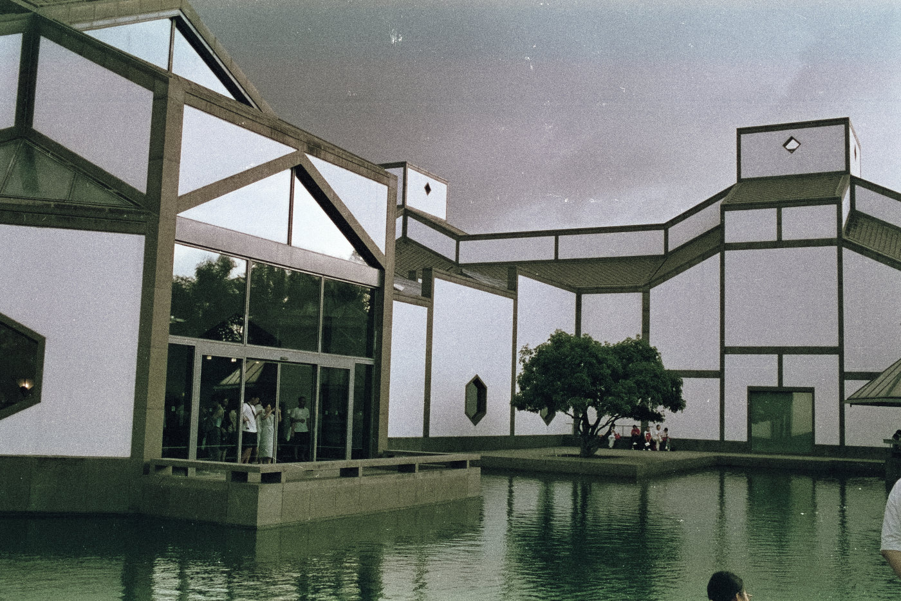
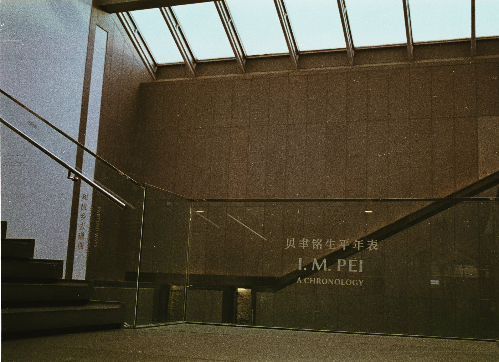
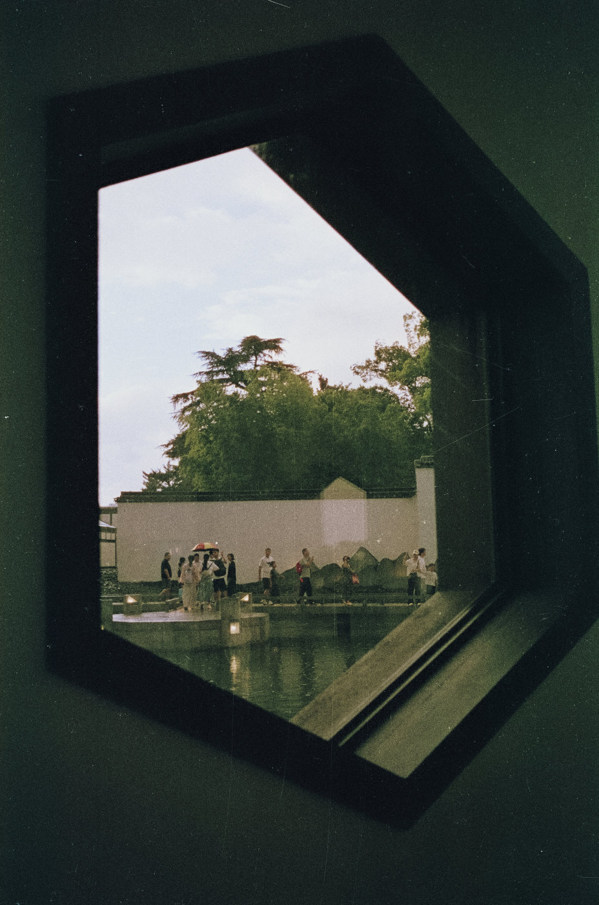
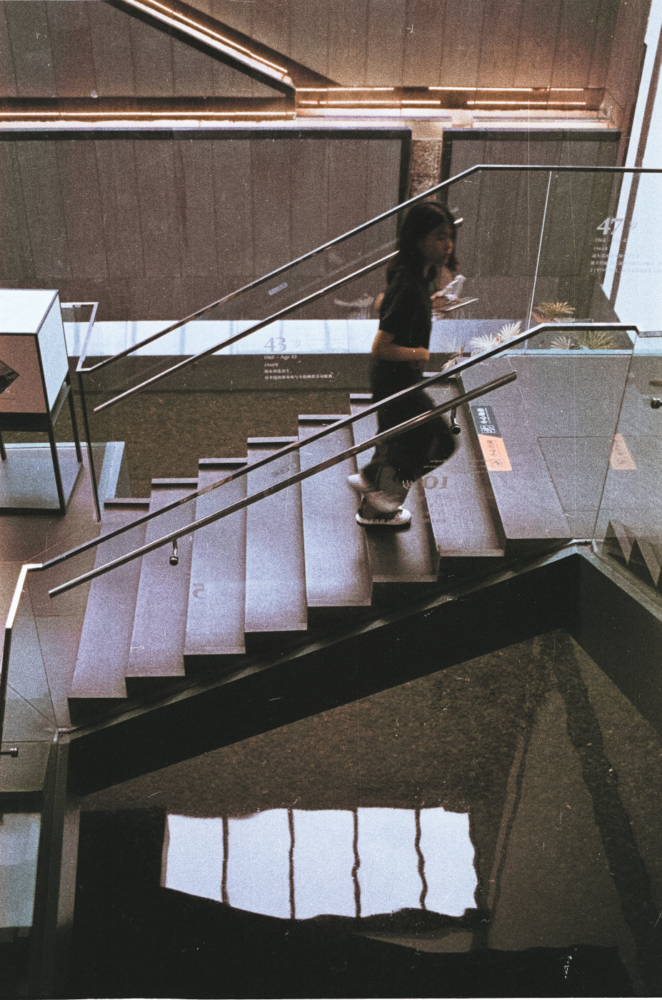
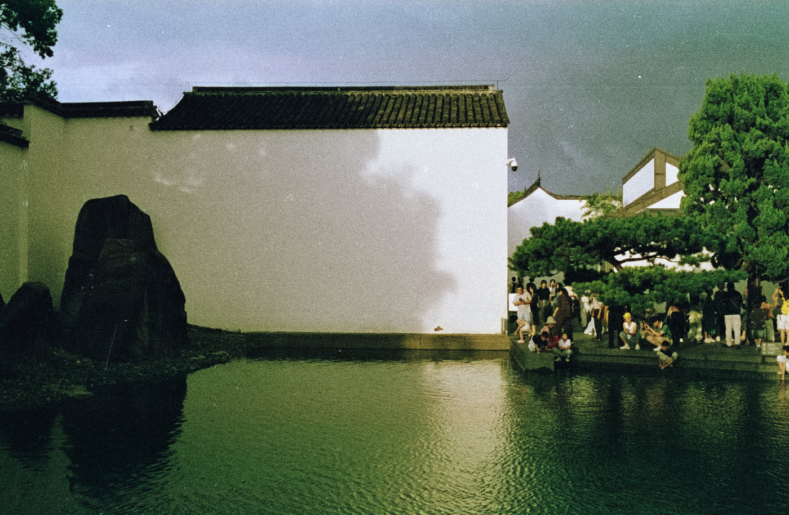
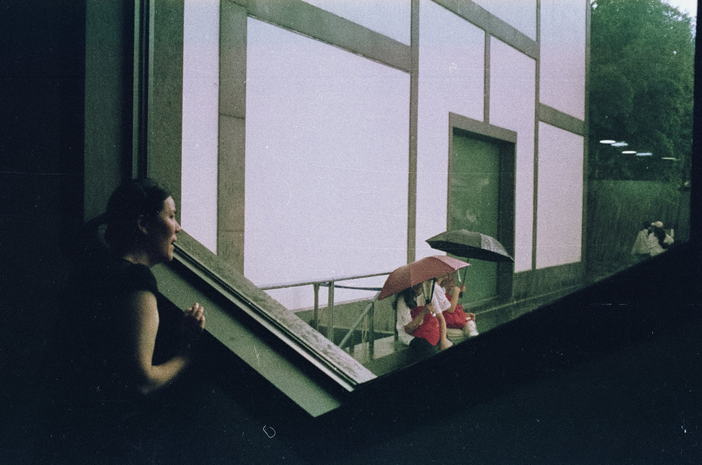
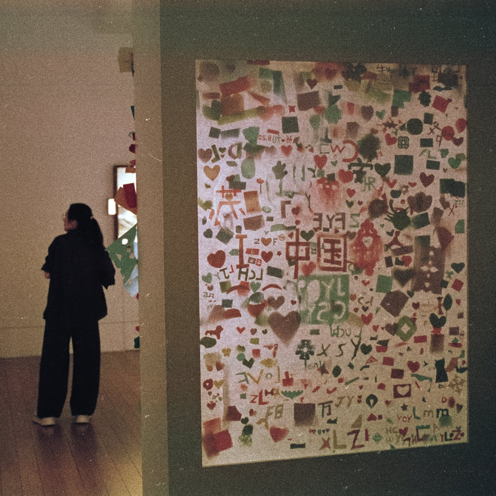
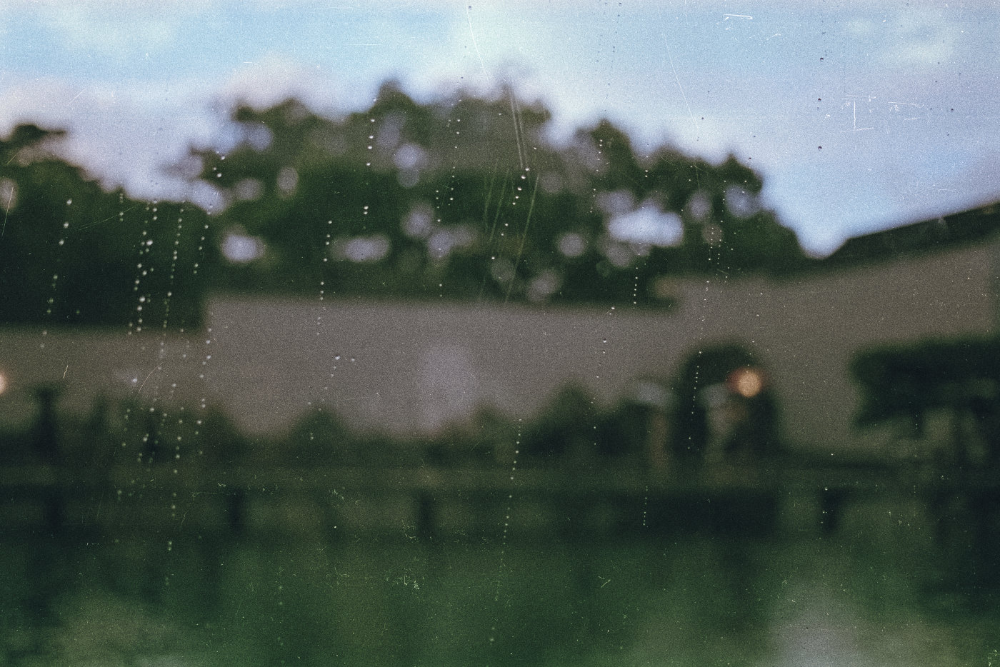

8月中下旬的一个傍晚，我带着一台胶片机和一台数码机，来到久仰的苏州博物馆本馆。参观的人很多，提前十天左右预约，到了门口仍然排了一会儿队才进入。
那天的天气有些奇怪，一会儿下雨，一会儿又露出阳光，天空也不断变换着颜色。趁着夏日傍晚的光线还算充足，我用 EOS 50 + EF 40mm F2.8 STM，把剩下的乐凯 C200 拍完了。
差不多二十年没有使用过的 EOS 50，重新拿起来却依然顺手。我一直很喜欢这台相机的外形：机顶转盘带着那个年代特有的设计感，配上轻巧的 40mm 饼干头以后，又像一台大号的傻瓜相机。
它并不是什么稀有或昂贵的相机，却会让我很想把它带出去拍照。
也许这就是人与工具之间很好的关系。
下面是这次选出的八张胶片照片。至于同一天拍下的数码照片，就留到下一篇了。
ENGLISH
Suzhou Museum on Film
One evening in late August, I visited the main branch of Suzhou Museum with both a film camera and a digital camera. The museum was crowded. Although I had made my reservation about ten days in advance, I still had to wait in line for a while before entering.
The weather that day was unpredictable. Rain would come and go, followed by brief spells of sunshine, while the sky kept changing color. With enough summer evening light still remaining, I used my EOS 50 with the EF 40mm F2.8 STM to finish the rest of a roll of Lucky C200.
I had not used the EOS 50 for nearly twenty years, yet it still felt immediately familiar in my hands. I have always liked the way this camera looks. The dial on top has a distinctive design from its era, and with the compact 40mm pancake lens attached, the camera almost feels like an oversized point-and-shoot.
It is neither a rare nor an expensive camera, but somehow it makes me want to take it out and make photographs.
Perhaps that is simply what a good relationship between a person and a tool should feel like.
Below are the eight film photographs I selected from that evening. The digital photographs from the same visit will have to wait for the next post.







